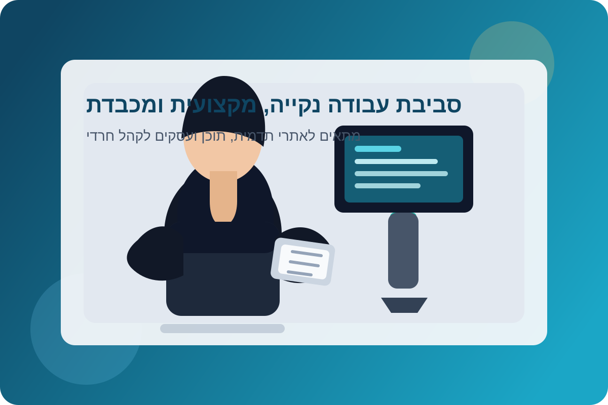

בניית אתרים לציבור החרדי — מה באמת חשוב לדעת לפני שמתחילים
- איך להתאים מסרים לקהלים שונים בציבור החרדי.
- מה בונה אמון גבוה כבר בעמודים הראשונים באתר.
- איך להפוך תוכן ועיצוב לשילוב שמייצר פניות.

כאשר בונים אתר שפונה לציבור החרדי, האתגר המרכזי איננו רק טכנולוגי או עיצובי. האתגר האמיתי הוא לייצר חיבור. חיבור בין המותג לבין הערכים של הקהל, בין שפה שיווקית לבין כבוד, בין רצון לבלוט לבין שמירה על טון נקי, אחראי ומכבד. הרבה בעלי עסקים חושבים שמספיק לבחור צבעים "סולידיים" ולהימנע מעומס, אבל זהו רק השלב הראשון. אתר טוב לקהל החרדי צריך לתרגם את השירות או המוצר לשפה שמרגישה מדויקת, אמינה ובטוחה. לא רק מבחינת המילים, אלא גם מבחינת סדר המידע, הדגשים, התמונות והקריאות לפעולה.
הבנת קהל היעד: לא "ציבור אחד", אלא קהלים שונים
אחת הטעויות הנפוצות היא להתייחס לציבור החרדי כקהל אחיד. בפועל, יש קהילות שונות, סגנונות תקשורת שונים ורמות פתיחות שונות לדיגיטל. לכן השלב הראשון בכל פרויקט הוא אפיון עומק: מי הלקוח המדויק? מה חשוב לו? ממה הוא חושש? מה יגרום לו להרגיש שהעסק הזה מבין אותו? לפעמים זה ניסוח עדין יותר, לפעמים זה מבנה עמוד פחות "אגרסיבי", ולפעמים זה דווקא דגש על שקיפות, שירות וזמינות אנושית. כשאתר מדבר נכון לקהל, אחוזי ההמרה עולים משמעותית גם בלי "טריקים" עיצוביים מיוחדים.

שפה, אמון וסדר: שלושת היסודות להמרה
באתרים שפונים לציבור החרדי, אמון הוא המטבע החזק ביותר. אמון נבנה דרך ניסוח מאוזן, הבטחות ריאליות, המלצות אמיתיות והצגת תהליך ברור. כדאי לשמור על טקסט קריא, מחולק לפסקאות קצרות, עם כותרות משנה ברורות שמאפשרות סריקה מהירה. חשוב להדגיש מענה אנושי, שעות פעילות, פרטי קשר נגישים ותחושת ליווי. אם האתר מרגיש "מהיר מדי" או "מוכר מדי", המשתמשים עלולים לנטוש גם אם המוצר מצוין. לעומת זאת, אתר שמעניק ביטחון, סדר ובהירות יוצר פניות איכותיות יותר לאורך זמן.
עיצוב נכון: מכבד, נקי ומזמין
עיצוב מותאם לציבור החרדי איננו אומר עיצוב "משעמם". להפך, אפשר לייצר אתר מרשים מאוד גם בקו נקי ומעודן. ההמלצה היא לבחור צבעוניות יציבה, להימנע מהסחות דעת מיותרות, ולהשתמש באייקונים ותמונות כלליות שמחזקים את המסר. כדאי גם לשמור על היררכיה ברורה בין כותרות, טקסטים וכפתורים. כפתור בולט אחד בכל מקטע יעבוד טוב יותר משלושה כפתורים מתחרים. בנוסף, חשוב להקפיד על מענה טלפוני, כי חלק גדול מהציבור מגיע מטלפונים כשרים
תוכן שמייצר פעולה: מה לשים בכל עמוד
בעמוד הבית מומלץ לענות מיד על שלוש שאלות: מה אתם מציעים, למי זה מתאים, ואיך מתחילים. בעמוד שירותים יש לפרט תועלות אמיתיות, לא רק תכונות טכניות. בעמוד "אודות" כדאי להציג את האנשים שמאחורי העסק ואת הסיפור, כי זה מחזק קשר ואמינות. בעמוד יצירת קשר חשוב לפשט את הטופס ולהוסיף אפשרויות נוחות כמו טלפון ווואטסאפ. בנוסף, בלוג מקצועי עם מאמרים קצרים ומדויקים משדר סמכות ומסייע בקידום אורגני בגוגל. כל עמוד צריך להוביל את המשתמש לצעד הבא באופן טבעי.
סיכום: אתר מוצלח הוא שילוב של כבוד ומקצועיות
בסוף, בניית אתר לציבור החרדי היא תהליך אסטרטגי שמבוסס על הקשבה ודיוק. כאשר משלבים שפה נכונה, עיצוב מכבד, מבנה חכם ותוכן בעל ערך — מתקבל אתר שלא רק נראה טוב, אלא גם עובד בפועל. זה אתר שמביא פניות, יוצר אמון ומציג את העסק בצורה שמרגישה נכונה לקהל. אם מתחילים נכון, האתר הופך לכלי צמיחה אמיתי לאורך שנים, ולא רק "כרטיס ביקור" דיגיטלי.